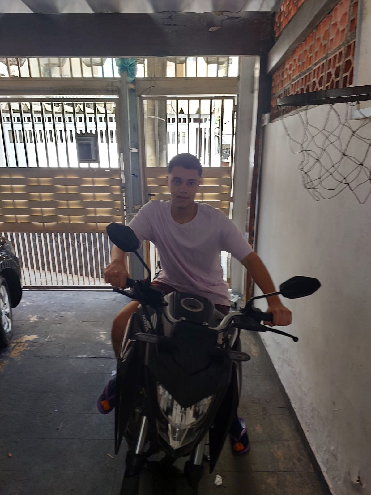
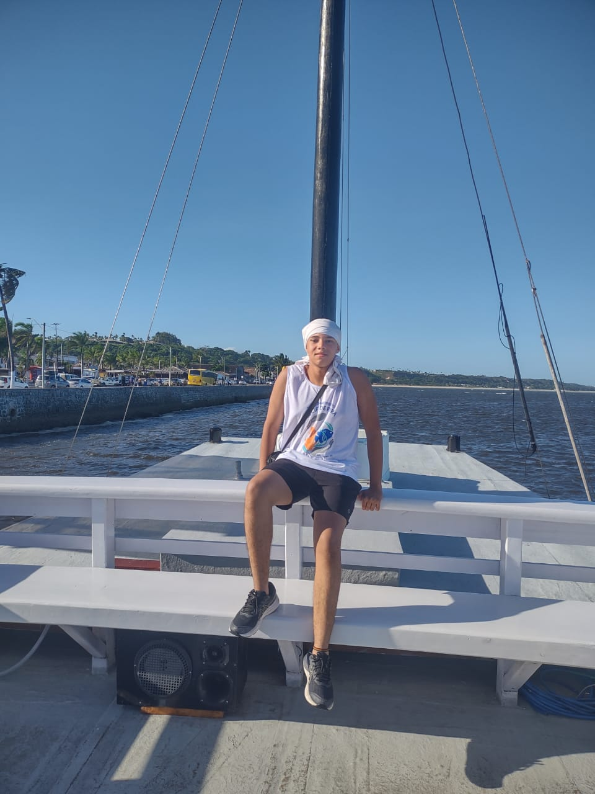
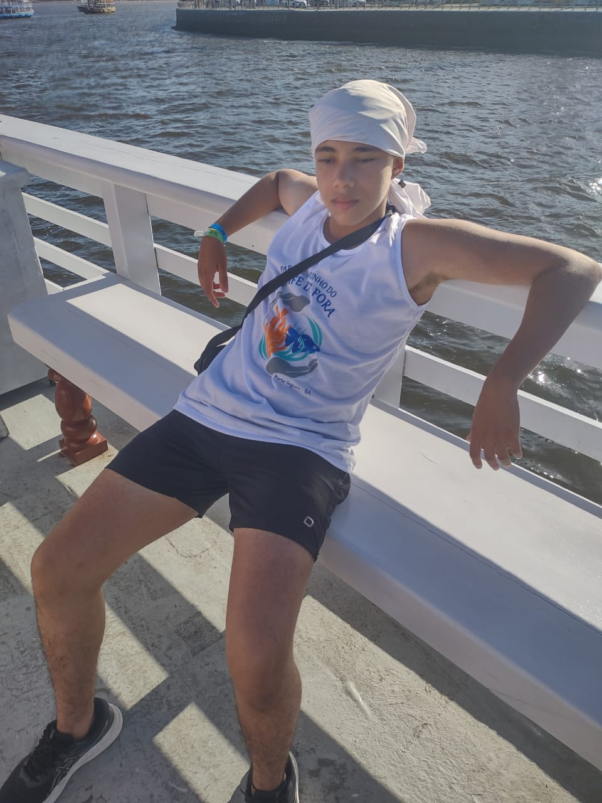

Um pouco sobre mim
Opaaa! Sou o Nicholas, moro na Fregeusia do Ó, junto com a minha mãe, meu pai, minha irmã e meus 2 cachorros.
Gosto de jogar bola mesmo eu sendo horrível, sair para lugares novos, conhecer pessoas, assistir series e animes, jogar jogos on-line e muito mais.


